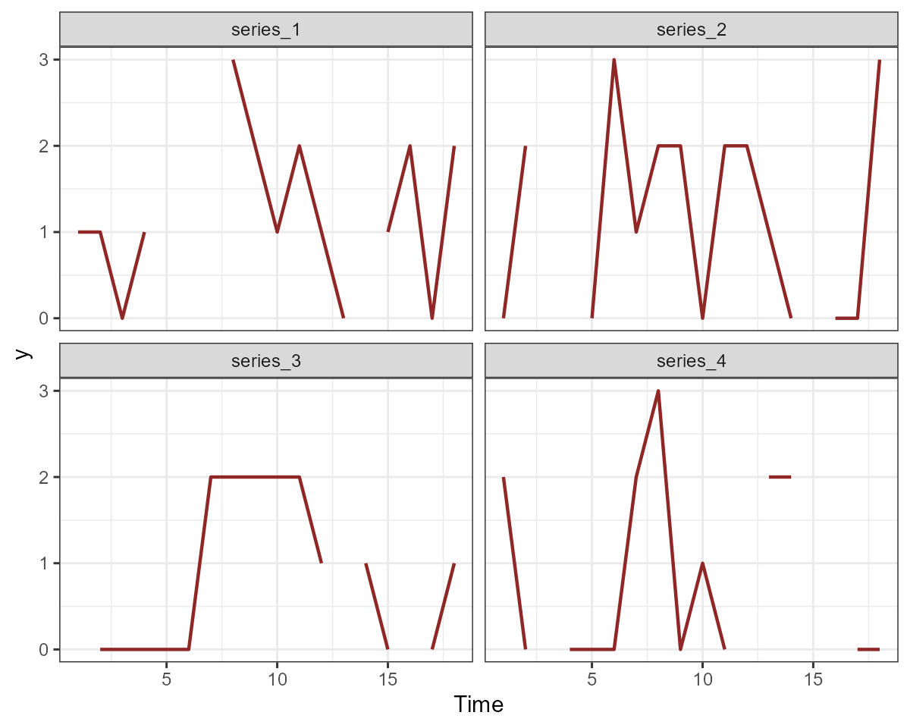
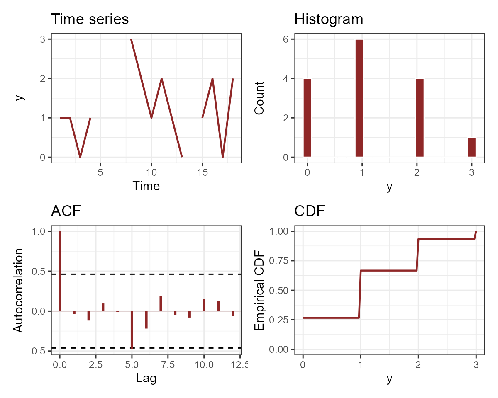

Formatting data for use in mvgam
Nicholas J Clark
2023-09-20
Source:vignettes/data_in_mvgam.Rmd
data_in_mvgam.RmdThis vignette gives an example of how to take raw data and format it
for use in mvgam. This is not an exhaustive example, as
data can be recorded and stored in a variety of ways, which requires
different approaches to wrangle the data into the necessary format for
mvgam. For full details on the basic mvgam
functionality, please see the
introductory vignette.
Required long data format
Manipulating the data into a ‘long’ format is necessary for modelling
in mvgam. By ‘long’ format, we mean that each
series x time observation needs to have its own entry in
the dataframe or list object that we wish to
use as data for modelling. A simple example can be viewed by simulating
data using the sim_mvgam function. See
?sim_mvgam for more details
## y season year series time
## 1 10 1 1 series_1 1
## 2 NA 1 1 series_2 1
## 3 13 1 1 series_3 1
## 4 6 1 1 series_4 1
## 5 4 2 1 series_1 2
## 6 2 2 1 series_2 2
## 7 3 2 1 series_3 2
## 8 0 2 1 series_4 2
## 9 4 3 1 series_1 3
## 10 NA 3 1 series_2 3
## 11 0 3 1 series_3 3
## 12 NA 3 1 series_4 3
## 13 9 4 1 series_1 4
## 14 4 4 1 series_2 4
## 15 7 4 1 series_3 4
## 16 NA 4 1 series_4 4
series as a factor variable
Notice how we have four different time series in these simulated
data, and we have identified the series-level indicator as a
factor variable.
class(simdat$data_train$series)## [1] "factor"
levels(simdat$data_train$series)## [1] "series_1" "series_2" "series_3" "series_4"It is important that the number of levels matches the number of
unique series in the data to ensure indexing across series works
properly in the underlying modelling functions. Several of the main
workhorse functions in the package (including mvgam() and
get_mvgam_priors()) will give an error if this is not the
case, but it may be worth checking anyway:
## [1] TRUENote that you can technically supply data that does not have a
series indicator, and the package will assume that you are
only using a single time series. But again, it is better to have this
included so there is no confusion.
A single outcome variable
You may also have notices that we do not spread the
numeric / integer-classed outcome variable into different
columns. Rather, there is only a single column for the outcome variable,
labelled y in these simulated data (though the outcome does
not have to be labelled y). This is another important
requirement in mvgam, but it shouldn’t be too unfamiliar to
R users who frequently use modelling packages such as
lme4, mgcv, brms or the many
other regression modelling packages out there. The advantage of this
format is that it is now very easy to specify effects that vary among
time series:
##
## Call:
## glm(formula = y ~ series + time, family = poisson(), data = simdat$data_train)
##
## Deviance Residuals:
## Min 1Q Median 3Q Max
## -2.7037 -1.7616 -0.8752 0.6520 3.6985
##
## Coefficients:
## Estimate Std. Error z value Pr(>|z|)
## (Intercept) 1.28034 0.19610 6.529 6.61e-11 ***
## seriesseries_2 -0.19845 0.22490 -0.882 0.37756
## seriesseries_3 0.06594 0.20320 0.325 0.74554
## seriesseries_4 -0.66950 0.25906 -2.584 0.00976 **
## time -0.01673 0.01626 -1.029 0.30353
## ---
## Signif. codes: 0 '***' 0.001 '**' 0.01 '*' 0.05 '.' 0.1 ' ' 1
##
## (Dispersion parameter for poisson family taken to be 1)
##
## Null deviance: 193.91 on 57 degrees of freedom
## Residual deviance: 181.82 on 53 degrees of freedom
## (14 observations deleted due to missingness)
## AIC: 311.94
##
## Number of Fisher Scoring iterations: 5##
## Family: poisson
## Link function: log
##
## Formula:
## y ~ series + s(time, by = series)
##
## Parametric coefficients:
## Estimate Std. Error z value Pr(>|z|)
## (Intercept) 0.4529 0.2906 1.559 0.119
## seriesseries_2 -0.1655 0.4531 -0.365 0.715
## seriesseries_3 0.2541 0.3684 0.690 0.490
## seriesseries_4 -3.0260 2.3425 -1.292 0.196
##
## Approximate significance of smooth terms:
## edf Ref.df Chi.sq p-value
## s(time):seriesseries_1 7.052 7.993 25.222 0.00136 **
## s(time):seriesseries_2 7.659 8.383 19.077 0.04327 *
## s(time):seriesseries_3 8.515 8.932 37.134 2.3e-05 ***
## s(time):seriesseries_4 8.637 8.948 9.375 0.39795
## ---
## Signif. codes: 0 '***' 0.001 '**' 0.01 '*' 0.05 '.' 0.1 ' ' 1
##
## R-sq.(adj) = 0.792 Deviance explained = 86.8%
## UBRE = 0.67868 Scale est. = 1 n = 58Depending on the observation families you plan to use when building
models, there may be some restrictions that need to be satisfied within
the outcome variable. For example, a Beta regression can only handle
proportional data, so values >= 1 or
<= 0 are not allowed. Likewise, a Poisson regression can
only handle non-negative integers. Most regression functions in
R will assume the user knows all of this and so will not
issue any warnings or errors if you choose the wrong distribution, but
often this ends up leading to some unhelpful error from an optimizer
that is difficult to interpret and diagnose. mvgam will
attempt to provide some errors if you do something that is simply not
allowed. For example, we can simulate data from a zero-centred Gaussian
distribution (ensuring that some of our values will be
< 1) and attempt a Beta regression in mvgam
using the betar family:
gauss_dat <- data.frame(outcome = rnorm(10),
series = factor('series1',
levels = 'series1'),
time = 1:10)
gauss_dat## outcome series time
## 1 1.4518774 series1 1
## 2 0.7909187 series1 2
## 3 0.5600856 series1 3
## 4 1.1257856 series1 4
## 5 0.5219366 series1 5
## 6 0.2520088 series1 6
## 7 1.1663208 series1 7
## 8 -0.4156534 series1 8
## 9 -1.2177150 series1 9
## 10 0.5216225 series1 10A call to gam using the mgcv package leads
to a model that actually fits (though it does give an unhelpful warning
message):
gam(outcome ~ time,
family = betar(),
data = gauss_dat)## Warning in family$saturated.ll(y, prior.weights, theta): saturated likelihood
## may be inaccurate##
## Family: Beta regression(0.169)
## Link function: logit
##
## Formula:
## outcome ~ time
## Total model degrees of freedom 2
##
## REML score: -120.5983But the same call to mvgam gives us something more
useful:
mvgam(outcome ~ time,
family = betar(),
data = gauss_dat)## Error: Values <= 0 not allowed for beta responsesPlease see ?mvgam_families for more information on the
types of responses that the package can handle and their
restrictions
A time variable
The other requirement for modelling in mvgam is a
numeric / integer-classed variable labelled
time to ensure the modelling software knows how to arrange
the time series when building models. This setup still allows us to
formulate multivariate time series models. If you plan to use any of the
autoregressive dynamic trend functions available in mvgam
(see ?mvgam_trends for details of available dynamic
processes), you will need to ensure your time series are entered with a
fixed sampling interval (i.e. the time between timesteps 1 and 2 should
be the same as the time between timesteps 2 and 3, etc…). But note that
you can have missing observations for some (or all) series.
mvgam will check this for you, but again it is useful to
ensure you have no missing timepoint x series combinations in your data.
You can generally do this with a simple dplyr call:
# A function to ensure all timepoints within a sequence are identical
all_times_avail = function(time, min_time, max_time){
identical(as.numeric(sort(time)),
as.numeric(seq.int(from = min_time, to = max_time)))
}
# Get min and max times from the data
min_time <- min(simdat$data_train$time)
max_time <- max(simdat$data_train$time)
# Check that all times are recorded for each series
data.frame(series = simdat$data_train$series,
time = simdat$data_train$time) %>%
dplyr::group_by(series) %>%
dplyr::summarise(all_there = all_times_avail(time,
min_time,
max_time)) -> checked_times
if(any(checked_times$all_there == FALSE)){
warning("One or more series in is missing observations for one or more timepoints")
} else {
cat('All series have observations at all timepoints :)')
}## All series have observations at all timepoints :)Note that models which use dynamic components will assume that
smaller values of time are older
(i.e. time = 1 came before time = 2,
etc…)
Checking data with get_mvgam_priors
The get_mvgam_priors function is designed to return
information about the parameters in a model whose prior distributions
can be modified by the user. But in doing so, it will perform a series
of checks to ensure the data are formatted properly. It can therefore be
very useful to new users for ensuring there isn’t anything strange going
on in the data setup. For example, we can replicate the steps taken
above (to check factor levels and timepoint x series combinations) with
a single call to get_mvgam_priors. Here we first simulate
some data in which some of the timepoints in the time
variable are not included in the data:
bad_times <- data.frame(time = seq(1, 16, by = 2),
series = factor('series_1'),
outcome = rnorm(8))
bad_times## time series outcome
## 1 1 series_1 2.20017302
## 2 3 series_1 1.17415246
## 3 5 series_1 1.90125966
## 4 7 series_1 0.02701025
## 5 9 series_1 0.15529913
## 6 11 series_1 -1.06454999
## 7 13 series_1 -1.48912904
## 8 15 series_1 -1.04876154Next we call get_mvgam_priors by simply specifying an
intercept-only model, which is enough to trigger all the checks:
get_mvgam_priors(outcome ~ 1,
data = bad_times,
family = gaussian())## Error: One or more series in data is missing observations for one or more timepointsThis error is useful as it tells us where the problem is. There are
many ways to fill in missing timepoints, so the correct way will have to
be left up to the user. But if you don’t have any covariates, it should
be pretty easy using expand.grid:
bad_times %>%
dplyr::right_join(expand.grid(time = seq(min(bad_times$time),
max(bad_times$time)),
series = factor(unique(bad_times$series),
levels = levels(bad_times$series)))) %>%
dplyr::arrange(time) -> good_times## Joining, by = c("time", "series")
good_times## time series outcome
## 1 1 series_1 2.20017302
## 2 2 series_1 NA
## 3 3 series_1 1.17415246
## 4 4 series_1 NA
## 5 5 series_1 1.90125966
## 6 6 series_1 NA
## 7 7 series_1 0.02701025
## 8 8 series_1 NA
## 9 9 series_1 0.15529913
## 10 10 series_1 NA
## 11 11 series_1 -1.06454999
## 12 12 series_1 NA
## 13 13 series_1 -1.48912904
## 14 14 series_1 NA
## 15 15 series_1 -1.04876154Now the call to get_mvgam_priors, using our filled in
data, should work:
get_mvgam_priors(outcome ~ 1,
data = good_times,
family = gaussian())## param_name param_length param_info
## 1 (Intercept) 1 (Intercept)
## 2 vector<lower=0>[n_series] sigma_obs; 1 observation error sd
## prior example_change
## 1 (Intercept) ~ student_t(3, 0, 2.5); (Intercept) ~ normal(0, 1);
## 2 sigma_obs ~ student_t(3, 0, 2.5); sigma_obs ~ normal(-0.08, 0.18);
## new_lowerbound new_upperbound
## 1 NA NA
## 2 NA NAThis function should also pick up on misaligned factor levels for the
series variable. We can check this by again simulating,
this time adding an additional factor level that is not included in the
data:
bad_levels <- data.frame(time = 1:8,
series = factor('series_1',
levels = c('series_1',
'series_2')),
outcome = rnorm(8))
levels(bad_levels$series)## [1] "series_1" "series_2"Another call to get_mvgam_priors brings up a useful
error:
get_mvgam_priors(outcome ~ 1,
data = bad_levels,
family = gaussian())## Error: Mismatch between factor levels of "series" and unique values of "series"
## Use
## `setdiff(levels(data$series), unique(data$series))`
## and
## `intersect(levels(data$series), unique(data$series))`
## for guidanceFollowing the message’s advice tells us there is a level for
series_2 in the series variable, but there are
no observations for this series in the data:
## [1] "series_2"Re-assigning the levels fixes the issue:
bad_levels %>%
dplyr::mutate(series = droplevels(series)) -> good_levels
levels(good_levels$series)## [1] "series_1"
get_mvgam_priors(outcome ~ 1,
data = good_levels,
family = gaussian())## param_name param_length param_info
## 1 (Intercept) 1 (Intercept)
## 2 vector<lower=0>[n_series] sigma_obs; 1 observation error sd
## prior example_change
## 1 (Intercept) ~ student_t(3, -0.6, 2.5); (Intercept) ~ normal(0, 1);
## 2 sigma_obs ~ student_t(3, 0, 2.5); sigma_obs ~ normal(0.52, 0.57);
## new_lowerbound new_upperbound
## 1 NA NA
## 2 NA NACovariates with no NAs
Covariates can be used in models just as you would when using
mgcv (see ?formula.gam for details of the
formula syntax). But although the outcome variable can have
NAs, covariates cannot. Most regression software will
silently drop any raws in the model matrix that have NAs,
which is not helpful when debugging. Both the mvgam and
get_mvgam_priors functions will run some simple checks for
you, and hopefully will return useful errors if it finds in missing
values:
miss_dat <- data.frame(outcome = rnorm(10),
cov = c(NA, rnorm(9)),
series = factor('series1',
levels = 'series1'),
time = 1:10)
miss_dat## outcome cov series time
## 1 1.84082730 NA series1 1
## 2 0.44230371 0.6659689 series1 2
## 3 -0.01698825 0.6715888 series1 3
## 4 -0.98516248 -0.5245143 series1 4
## 5 -1.30131051 -0.1782780 series1 5
## 6 0.79144304 -1.5080633 series1 6
## 7 -0.72575780 -0.5069440 series1 7
## 8 1.21879626 1.5301172 series1 8
## 9 1.15411215 0.9275405 series1 9
## 10 0.25047894 0.7677354 series1 10
get_mvgam_priors(outcome ~ cov,
data = miss_dat,
family = gaussian())## Error: Missing values found in data predictors:
## Error in na.fail.default(structure(list(outcome = c(1.8408273037587, 0.442303711839762, : missing values in objectJust like with the mgcv package, mvgam can
also accept data as a list object. This is useful if you
want to set up linear
functional predictors or even distributed lag predictors. The checks
run by mvgam should still work on these data. Here we
change the cov predictor to be a matrix:
miss_dat <- list(outcome = rnorm(10),
series = factor('series1',
levels = 'series1'),
time = 1:10)
miss_dat$cov <- matrix(rnorm(50), ncol = 5, nrow = 10)
miss_dat$cov[2,3] <- NAA call to mvgam returns the same error:
get_mvgam_priors(outcome ~ cov,
data = miss_dat,
family = gaussian())## Error: Missing values found in data predictors:
## Error in na.fail.default(structure(list(outcome = c(0.378630170365263, : missing values in objectPlotting with plot_mvgam_series
Plotting the data is a useful way to ensure everything looks ok, once
you’ve gone throug the above checks on factor levels and timepoint x
series combinations. The plot_mvgam_series function will
take supplied data and plot either a series of line plots (if you choose
series = 'all') or a set of plots to describe the
distribution for a single time series. For example, to plot all of the
time series in our data, and highlight a single series in each plot, we
can use:
plot_mvgam_series(data = simdat$data_train,
y = 'y',
series = 'all')
Or we can look more closely at the distribution for the first time series:
plot_mvgam_series(data = simdat$data_train,
y = 'y',
series = 1)
If you have split your data into training and testing folds (i.e. for forecast evaluation), you can include the test data in your plots:
plot_mvgam_series(data = simdat$data_train,
newdata = simdat$data_test,
y = 'y',
series = 1)
Example with NEON tick data
To give one example of how data can be reformatted for
mvgam modelling, we will use observations from the National
Ecological Observatory Network (NEON) tick drag cloth samples.
Ixodes scapularis is a widespread tick species capable of
transmitting a diversity of parasites to animals and humans, many of
which are zoonotic. Due to the medical and ecological importance of this
tick species, a common goal is to understand factors that influence
their abundances. The NEON field team carries out standardised long-term monitoring of tick abundances as well as other
important indicators of ecological change. Nymphal abundance of
I. scapularis is routinely recorded across NEON plots using a
field sampling method called drag cloth sampling, which is a common
method for sampling ticks in the landscape. Field researchers sample
ticks by dragging a large cloth behind themselves through terrain that
is suspected of harboring ticks, usually working in a grid-like pattern.
The sites have been sampled since 2014, resulting in a rich dataset of
nymph abundance time series. These tick time series show strong
seasonality and incorporate many of the challenging features associated
with ecological data including overdispersion, high proportions of
missingness and irregular sampling in time, making them useful for
exploring the utility of dynamic GAMs.
We begin by loading NEON tick data for the years 2014 - 2021, which
were downloaded from NEON and prepared as described in Clark & Wells 2022. You can read a bit about the
data using the call ?all_neon_tick_data
## tibble [3,505 × 24] (S3: tbl_df/tbl/data.frame)
## $ Year : num [1:3505] 2015 2015 2015 2015 2015 ...
## $ epiWeek : chr [1:3505] "37" "38" "39" "40" ...
## $ yearWeek : chr [1:3505] "201537" "201538" "201539" "201540" ...
## $ plotID : chr [1:3505] "BLAN_005" "BLAN_005" "BLAN_005" "BLAN_005" ...
## $ siteID : chr [1:3505] "BLAN" "BLAN" "BLAN" "BLAN" ...
## $ nlcdClass : chr [1:3505] "deciduousForest" "deciduousForest" "deciduousForest" "deciduousForest" ...
## $ decimalLatitude : num [1:3505] 39.1 39.1 39.1 39.1 39.1 ...
## $ decimalLongitude : num [1:3505] -78 -78 -78 -78 -78 ...
## $ elevation : num [1:3505] 168 168 168 168 168 ...
## $ totalSampledArea : num [1:3505] 162 NA NA NA 162 NA NA NA NA 164 ...
## $ amblyomma_americanum: num [1:3505] NA NA NA NA NA NA NA NA NA NA ...
## $ ixodes_scapularis : num [1:3505] 2 NA NA NA 0 NA NA NA NA 0 ...
## $ time : Date[1:3505], format: "2015-09-13" "2015-09-20" ...
## $ RHMin_precent : num [1:3505] NA NA NA NA NA NA NA NA NA NA ...
## $ RHMin_variance : num [1:3505] NA NA NA NA NA NA NA NA NA NA ...
## $ RHMax_precent : num [1:3505] NA NA NA NA NA NA NA NA NA NA ...
## $ RHMax_variance : num [1:3505] NA NA NA NA NA NA NA NA NA NA ...
## $ airTempMin_degC : num [1:3505] NA NA NA NA NA NA NA NA NA NA ...
## $ airTempMin_variance : num [1:3505] NA NA NA NA NA NA NA NA NA NA ...
## $ airTempMax_degC : num [1:3505] NA NA NA NA NA NA NA NA NA NA ...
## $ airTempMax_variance : num [1:3505] NA NA NA NA NA NA NA NA NA NA ...
## $ soi : num [1:3505] -18.4 -17.9 -23.5 -28.4 -25.9 ...
## $ cum_sdd : num [1:3505] 173 173 173 173 173 ...
## $ cum_gdd : num [1:3505] 1129 1129 1129 1129 1129 ...For this exercise, we will use the epiWeek variable as
an index of seasonality, and we will only work with observations from a
few sampling plots (labelled in the plotID column):
plotIDs <- c('SCBI_013','SCBI_002',
'SERC_001','SERC_005',
'SERC_006','SERC_012',
'BLAN_012','BLAN_005')Now we can select the target species we want (I.
scapularis), filter to the correct plot IDs and convert the
epiWeek variable from character to
numeric:
model_dat <- all_neon_tick_data %>%
dplyr::ungroup() %>%
dplyr::mutate(target = ixodes_scapularis) %>%
dplyr::filter(plotID %in% plotIDs) %>%
dplyr::select(Year, epiWeek, plotID, target) %>%
dplyr::mutate(epiWeek = as.numeric(epiWeek))Now is the tricky part: we need to fill in missing observations with
NAs. The tick data are sparse in that field observers do
not go out and sample in each possible epiWeek. So there
are many particular weeks in which observations are not included in the
data. But we can use expand.grid again to take care of
this:
model_dat %>%
# Create all possible combos of plotID, Year and epiWeek;
# missing outcomes will be filled in as NA
dplyr::full_join(expand.grid(plotID = unique(model_dat$plotID),
Year = unique(model_dat$Year),
epiWeek = seq(1, 52))) %>%
# left_join back to original data so plotID and siteID will
# match up, in case you need the siteID for anything else later on
dplyr::left_join(all_neon_tick_data %>%
dplyr::select(siteID, plotID) %>%
dplyr::distinct()) -> model_dat## Joining, by = c("Year", "epiWeek", "plotID")
## Joining, by = "plotID"Create the series variable needed for mvgam
modelling:
model_dat %>%
dplyr::mutate(series = plotID,
y = target) %>%
dplyr::mutate(siteID = factor(siteID),
series = factor(series)) %>%
dplyr::select(-target, -plotID) %>%
dplyr::arrange(Year, epiWeek, series) -> model_dat Now create the time variable, which needs to track
Year and epiWeek for each unique series. The
n function from dplyr is often useful if
generating a time index for grouped dataframes:
model_dat %>%
dplyr::ungroup() %>%
dplyr::group_by(series) %>%
dplyr::arrange(Year, epiWeek) %>%
dplyr::mutate(time = seq(1, dplyr::n())) %>%
dplyr::ungroup() -> model_datCheck factor levels for the series:
levels(model_dat$series)## [1] "BLAN_005" "BLAN_012" "SCBI_002" "SCBI_013" "SERC_001" "SERC_005" "SERC_006"
## [8] "SERC_012"This looks good, as does a more rigorous check using
get_mvgam_priors:
get_mvgam_priors(y ~ 1,
data = model_dat,
family = poisson())## param_name param_length param_info prior
## 1 (Intercept) 1 (Intercept) (Intercept) ~ student_t(3, -2.3, 2.5);
## example_change new_lowerbound new_upperbound
## 1 (Intercept) ~ normal(0, 1); NA NAWe can also set up a model in mvgam but use
run_model = FALSE to further ensure all of the necessary
steps for creating the modelling code and objects will run. It is
recommended that you use the cmdstanr backend if possible,
as the auto-formatting options available in this package are very useful
for checking the package-generated Stan code for any
inefficiencies that can be fixed to lead to sampling performance
improvements:
testmod <- mvgam(y ~ s(epiWeek, by = series, bs = 'cc') +
s(series, bs = 're'),
trend_model = 'AR1',
data = model_dat,
backend = 'cmdstanr',
run_model = FALSE)This call runs without issue, and the resulting object now contains the model code and data objects that are needed to initiate sampling:
str(testmod$model_data)## List of 25
## $ y : num [1:416, 1:8] -1 -1 -1 -1 -1 -1 -1 -1 -1 -1 ...
## $ n : int 416
## $ X : num [1:3328, 1:73] 1 1 1 1 1 1 1 1 1 1 ...
## ..- attr(*, "dimnames")=List of 2
## .. ..$ : chr [1:3328] "1" "2" "3" "4" ...
## .. ..$ : chr [1:73] "X.Intercept." "V2" "V3" "V4" ...
## $ S1 : num [1:8, 1:8] 1.037 -0.416 0.419 0.117 0.188 ...
## $ zero : num [1:73] 0 0 0 0 0 0 0 0 0 0 ...
## $ S2 : num [1:8, 1:8] 1.037 -0.416 0.419 0.117 0.188 ...
## $ S3 : num [1:8, 1:8] 1.037 -0.416 0.419 0.117 0.188 ...
## $ S4 : num [1:8, 1:8] 1.037 -0.416 0.419 0.117 0.188 ...
## $ S5 : num [1:8, 1:8] 1.037 -0.416 0.419 0.117 0.188 ...
## $ S6 : num [1:8, 1:8] 1.037 -0.416 0.419 0.117 0.188 ...
## $ S7 : num [1:8, 1:8] 1.037 -0.416 0.419 0.117 0.188 ...
## $ S8 : num [1:8, 1:8] 1.037 -0.416 0.419 0.117 0.188 ...
## $ p_coefs : Named num 0.822
## ..- attr(*, "names")= chr "(Intercept)"
## $ p_taus : num 192
## $ ytimes : int [1:416, 1:8] 1 9 17 25 33 41 49 57 65 73 ...
## $ n_series : int 8
## $ sp : Named num [1:9] 10.82 14.59 35.75 14.32 2.07 ...
## ..- attr(*, "names")= chr [1:9] "s(epiWeek):seriesBLAN_005" "s(epiWeek):seriesBLAN_012" "s(epiWeek):seriesSCBI_002" "s(epiWeek):seriesSCBI_013" ...
## $ y_observed : num [1:416, 1:8] 0 0 0 0 0 0 0 0 0 0 ...
## $ total_obs : int 3328
## $ num_basis : int 73
## $ n_sp : num 9
## $ n_nonmissing: int 400
## $ obs_ind : int [1:400] 89 93 98 101 115 118 121 124 127 130 ...
## $ flat_ys : num [1:400] 2 0 0 0 0 0 0 25 36 14 ...
## $ flat_xs : num [1:400, 1:73] 1 1 1 1 1 1 1 1 1 1 ...
## ..- attr(*, "dimnames")=List of 2
## .. ..$ : chr [1:400] "705" "737" "777" "801" ...
## .. ..$ : chr [1:73] "X.Intercept." "V2" "V3" "V4" ...
code(testmod)## // Stan model code generated by package mvgam
## data {
## int<lower=0> total_obs; // total number of observations
## int<lower=0> n; // number of timepoints per series
## int<lower=0> n_sp; // number of smoothing parameters
## int<lower=0> n_series; // number of series
## int<lower=0> num_basis; // total number of basis coefficients
## vector[num_basis] zero; // prior locations for basis coefficients
## matrix[total_obs, num_basis] X; // mgcv GAM design matrix
## array[n, n_series] int<lower=0> ytimes; // time-ordered matrix (which col in X belongs to each [time, series] observation?)
## matrix[8, 8] S1; // mgcv smooth penalty matrix S1
## matrix[8, 8] S2; // mgcv smooth penalty matrix S2
## matrix[8, 8] S3; // mgcv smooth penalty matrix S3
## matrix[8, 8] S4; // mgcv smooth penalty matrix S4
## matrix[8, 8] S5; // mgcv smooth penalty matrix S5
## matrix[8, 8] S6; // mgcv smooth penalty matrix S6
## matrix[8, 8] S7; // mgcv smooth penalty matrix S7
## matrix[8, 8] S8; // mgcv smooth penalty matrix S8
## int<lower=0> n_nonmissing; // number of nonmissing observations
## array[n_nonmissing] int<lower=0> flat_ys; // flattened nonmissing observations
## matrix[n_nonmissing, num_basis] flat_xs; // X values for nonmissing observations
## array[n_nonmissing] int<lower=0> obs_ind; // indices of nonmissing observations
## }
## parameters {
## // raw basis coefficients
## vector[num_basis] b_raw;
## // random effect variances
## vector<lower=0>[1] sigma_raw;
## // random effect means
## vector[1] mu_raw;
## // latent trend AR1 terms
## vector<lower=-1.5, upper=1.5>[n_series] ar1;
## // latent trend variance parameters
## vector<lower=0>[n_series] sigma;
## // latent trends
## matrix[n, n_series] trend;
## // smoothing parameters
## vector<lower=0>[n_sp] lambda;
## }
## transformed parameters {
## // basis coefficients
## vector[num_basis] b;
## b[1 : 65] = b_raw[1 : 65];
## b[66 : 73] = mu_raw[1] + b_raw[66 : 73] * sigma_raw[1];
## }
## model {
## // prior for random effect population variances
## sigma_raw ~ student_t(3, 0, 2.5);
## // prior for random effect population means
## mu_raw ~ std_normal();
## // prior for (Intercept)...
## b_raw[1] ~ student_t(3, -2.3, 2.5);
## // prior for s(epiWeek):seriesBLAN_005...
## b_raw[2 : 9] ~ multi_normal_prec(zero[2 : 9], S1[1 : 8, 1 : 8] * lambda[1]);
## // prior for s(epiWeek):seriesBLAN_012...
## b_raw[10 : 17] ~ multi_normal_prec(zero[10 : 17],
## S2[1 : 8, 1 : 8] * lambda[2]);
## // prior for s(epiWeek):seriesSCBI_002...
## b_raw[18 : 25] ~ multi_normal_prec(zero[18 : 25],
## S3[1 : 8, 1 : 8] * lambda[3]);
## // prior for s(epiWeek):seriesSCBI_013...
## b_raw[26 : 33] ~ multi_normal_prec(zero[26 : 33],
## S4[1 : 8, 1 : 8] * lambda[4]);
## // prior for s(epiWeek):seriesSERC_001...
## b_raw[34 : 41] ~ multi_normal_prec(zero[34 : 41],
## S5[1 : 8, 1 : 8] * lambda[5]);
## // prior for s(epiWeek):seriesSERC_005...
## b_raw[42 : 49] ~ multi_normal_prec(zero[42 : 49],
## S6[1 : 8, 1 : 8] * lambda[6]);
## // prior for s(epiWeek):seriesSERC_006...
## b_raw[50 : 57] ~ multi_normal_prec(zero[50 : 57],
## S7[1 : 8, 1 : 8] * lambda[7]);
## // prior for s(epiWeek):seriesSERC_012...
## b_raw[58 : 65] ~ multi_normal_prec(zero[58 : 65],
## S8[1 : 8, 1 : 8] * lambda[8]);
## // prior (non-centred) for s(series)...
## b_raw[66 : 73] ~ std_normal();
## // priors for AR parameters
## ar1 ~ std_normal();
## // priors for smoothing parameters
## lambda ~ normal(10, 25);
## // priors for latent trend variance parameters
## sigma ~ student_t(3, 0, 2.5);
## // trend estimates
## trend[1, 1 : n_series] ~ normal(0, sigma);
## for (s in 1 : n_series) {
## trend[2 : n, s] ~ normal(ar1[s] * trend[1 : (n - 1), s], sigma[s]);
## }
## {
## // likelihood functions
## vector[n_nonmissing] flat_trends;
## flat_trends = to_vector(trend)[obs_ind];
## flat_ys ~ poisson_log_glm(append_col(flat_xs, flat_trends), 0.0,
## append_row(b, 1.0));
## }
## }
## generated quantities {
## vector[total_obs] eta;
## matrix[n, n_series] mus;
## vector[n_sp] rho;
## vector[n_series] tau;
## array[n, n_series] int ypred;
## rho = log(lambda);
## for (s in 1 : n_series) {
## tau[s] = pow(sigma[s], -2.0);
## }
## // posterior predictions
## eta = X * b;
## for (s in 1 : n_series) {
## mus[1 : n, s] = eta[ytimes[1 : n, s]] + trend[1 : n, s];
## ypred[1 : n, s] = poisson_log_rng(mus[1 : n, s]);
## }
## }